Slide 1
“Things They Still Carry,” Digital Humanities Internship Program, 2024-25
Janae Neely, J.R. Irving, Mya Kelly,
Ian Quiachon, Autumn Curnutt
Supervisor: Jason Higgins
Ian Quiachon, Autumn Curnutt
Supervisor: Jason Higgins
April 30, 2025
Slide 2
Library of Congress Veterans History Project
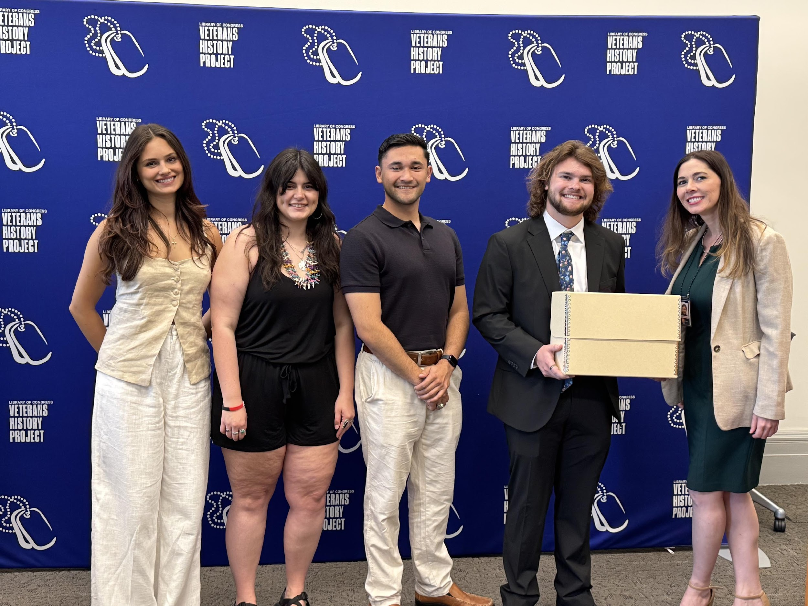
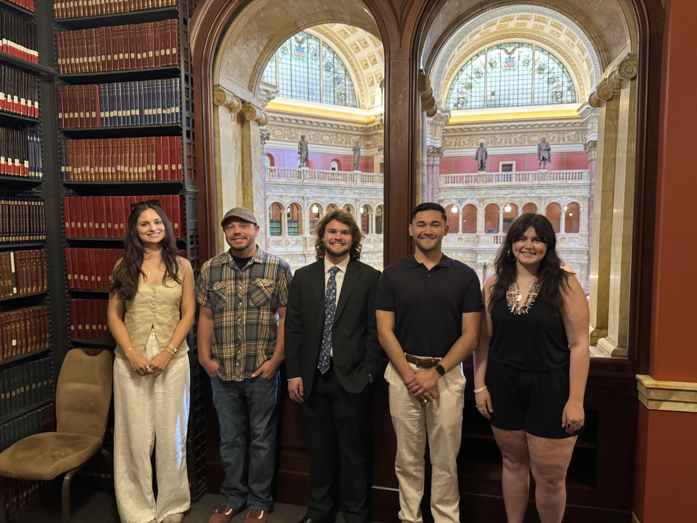
Slide 3
Contested Spaces Symposium, Mar. 2025
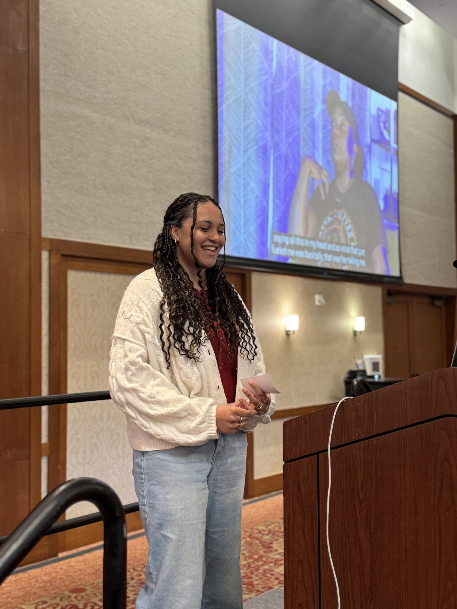
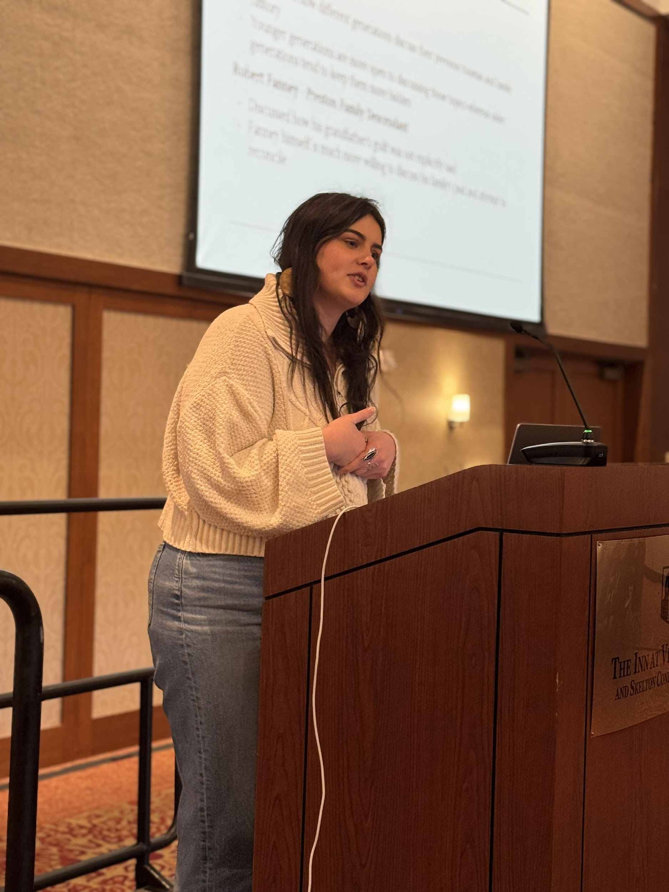
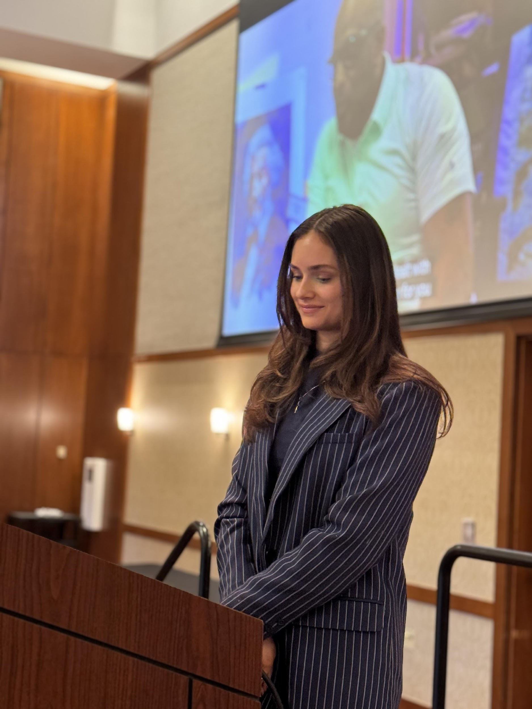
Janae Neely
Autumn Curnutt
Mya Kelly
Slide 4
Learning Process & Learning Objectives
Journalism Interviews vs. Oral History Interviews
Broadening my knowledge in Adobe technology
Capturing the Fractions
Broadening my knowledge in Adobe technology
Capturing the Fractions
Grow in Creativity and Problem Solving
Expand Digital Fluency
Expand Digital Fluency
Slide 5
Significance
Strengthened and expanded my skills in writing, video and audio editing
Gained new experiences and knowledge in tasks such as transcribing interviews, creating abstracts, transcripts, and glossaries for each interview, and highlighting important moments in interviews
From a journalistic perspective, this experience allowed me to express my creativity through each interview and capture that interviewee's personality
The DCRP inspired me to have these open conversations with family members and gain this knowledge while it's still available to me
Gained new experiences and knowledge in tasks such as transcribing interviews, creating abstracts, transcripts, and glossaries for each interview, and highlighting important moments in interviews
From a journalistic perspective, this experience allowed me to express my creativity through each interview and capture that interviewee's personality
The DCRP inspired me to have these open conversations with family members and gain this knowledge while it's still available to me
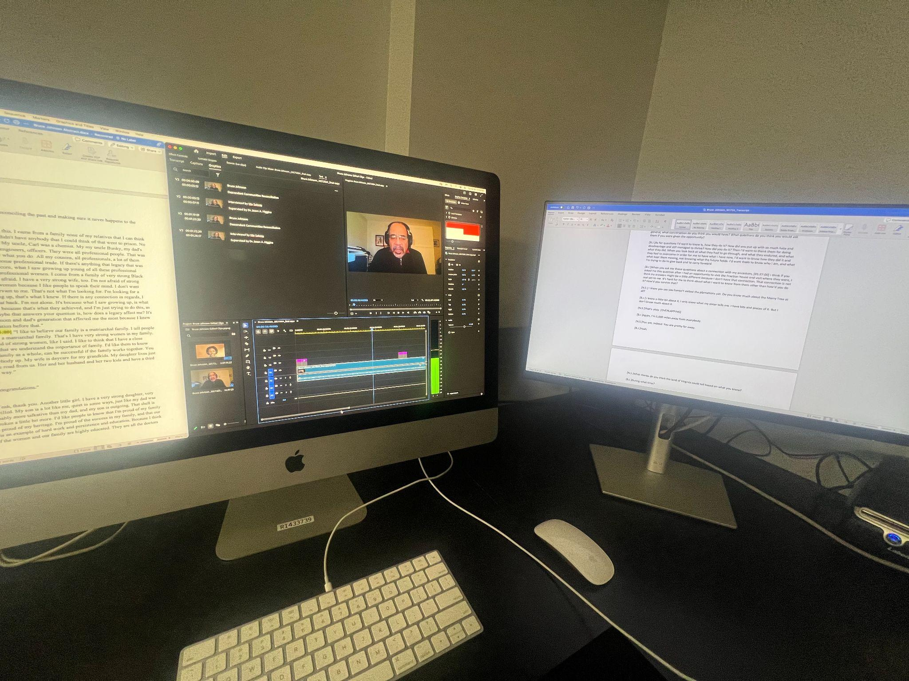
Slide 6
Overview of My Role
Responsibilities:
Conducted and facilitated in-depth interviews with Vietnam War veterans
Processed interviews for historical preservation and academic use
Communicated with veterans to finalize biographical information and legal permissions
Human Connection:
Built trust and rapport with interviewees through sensitive, respectful engagement
Listened to stories that were deeply personal—many of which involved trauma or loss
Recognized the privilege and responsibility of documenting these narratives
Conducted and facilitated in-depth interviews with Vietnam War veterans
Processed interviews for historical preservation and academic use
Communicated with veterans to finalize biographical information and legal permissions
Human Connection:
Built trust and rapport with interviewees through sensitive, respectful engagement
Listened to stories that were deeply personal—many of which involved trauma or loss
Recognized the privilege and responsibility of documenting these narratives
Slide 7
Key Takeaways and Reflections
Empathy & Individuality:
Every veteran’s story was distinct—even among those with similar backgrounds, in service or their upbringing
Their perspectives on the war varied greatly, shaped by personal values, context, and lived experience
This work reinforced the importance of honoring the individual humanity within historical narratives
Professional & Personal Growth:
Learned how to navigate emotionally complex conversations with care and professionalism
Gained a deeper understanding of the Vietnam War through firsthand testimony
Felt honored to contribute to preserving these voices for future generations
Every veteran’s story was distinct—even among those with similar backgrounds, in service or their upbringing
Their perspectives on the war varied greatly, shaped by personal values, context, and lived experience
This work reinforced the importance of honoring the individual humanity within historical narratives
Professional & Personal Growth:
Learned how to navigate emotionally complex conversations with care and professionalism
Gained a deeper understanding of the Vietnam War through firsthand testimony
Felt honored to contribute to preserving these voices for future generations
Why It Matters:
These interviews are more than historical records—they are acts of remembrance and respect
Preserving each veteran’s story ensures their experiences are not reduced to statistics or stereotypes
It was an honor to be entrusted with their truths
These interviews are more than historical records—they are acts of remembrance and respect
Preserving each veteran’s story ensures their experiences are not reduced to statistics or stereotypes
It was an honor to be entrusted with their truths
Slide 8
Overview of my Role
Processing video and audio footage of interviews
Editing long form interview content
Reaching out and interviewing Vietnam Veterans for the project
Researching topics discussed in interviews
Editing long form interview content
Reaching out and interviewing Vietnam Veterans for the project
Researching topics discussed in interviews
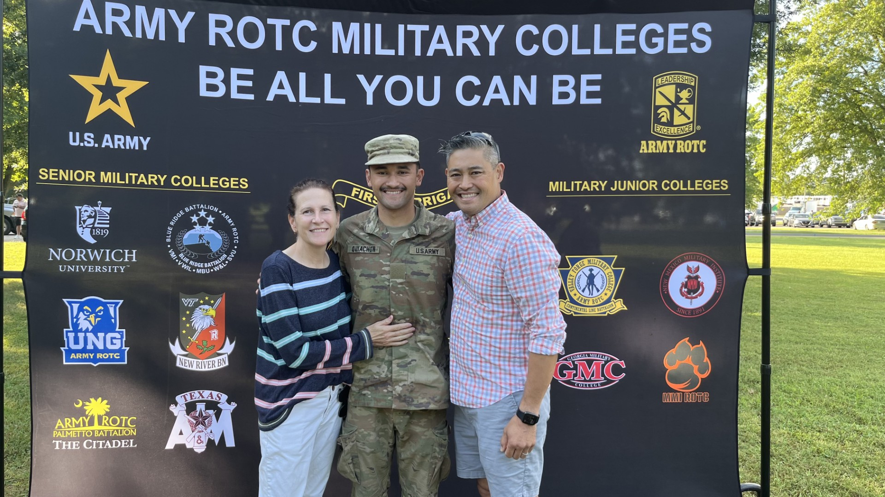
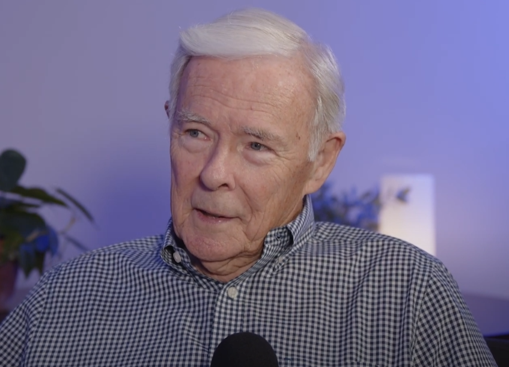
Slide 9
Key Takeaways
History, especially when talking to individuals is not a monolith
Setting individual timelines and goals is important
Software knowledge and familiarization is an important aspect of historical work
Working within the field of history is not a one person job
History is a personable field
Why this Work Matters:
The Preservation of knowledge is an important aspect of academia
The Veterans and other people interviewed for oral history projects deserve to have their accounts recorded for future generations
Setting individual timelines and goals is important
Software knowledge and familiarization is an important aspect of historical work
Working within the field of history is not a one person job
History is a personable field
Why this Work Matters:
The Preservation of knowledge is an important aspect of academia
The Veterans and other people interviewed for oral history projects deserve to have their accounts recorded for future generations
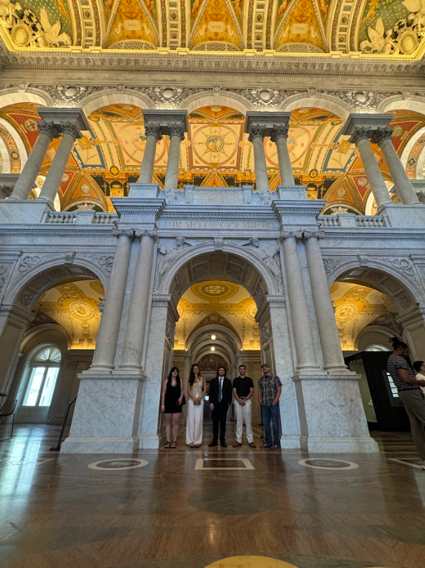
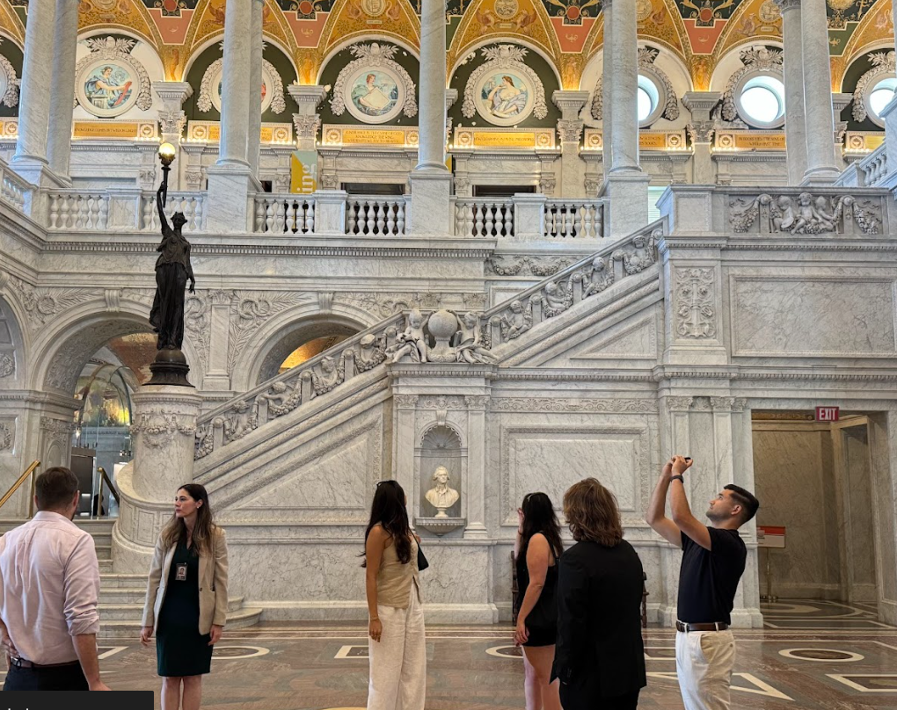
Slide 10
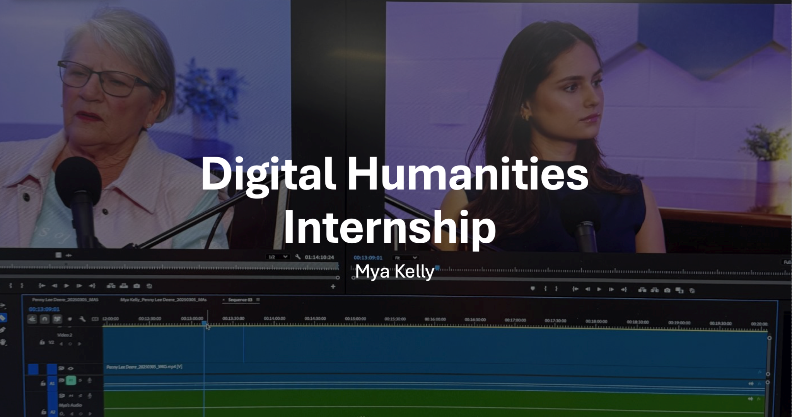
Slide 11
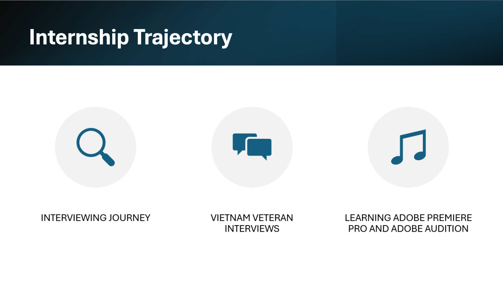
Slide 12
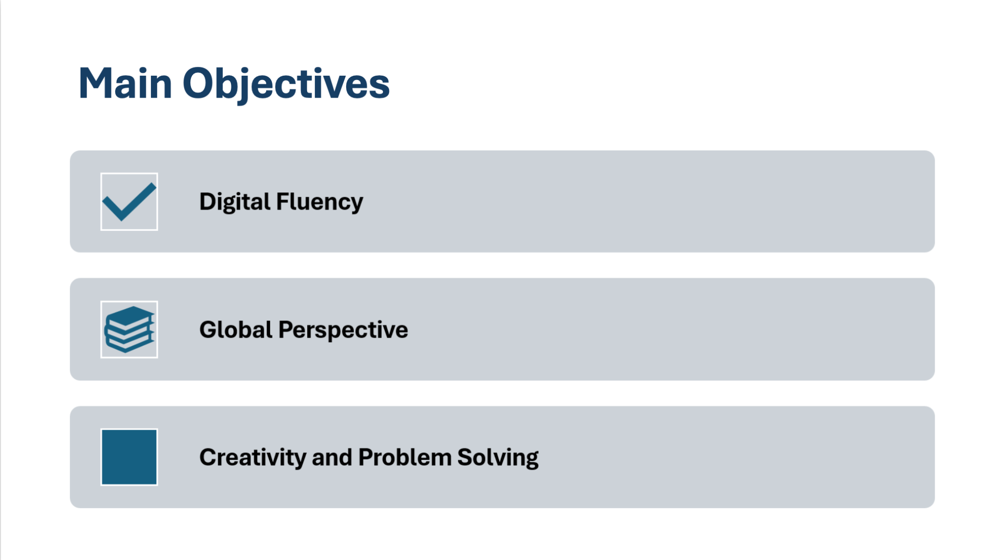
Slide 13
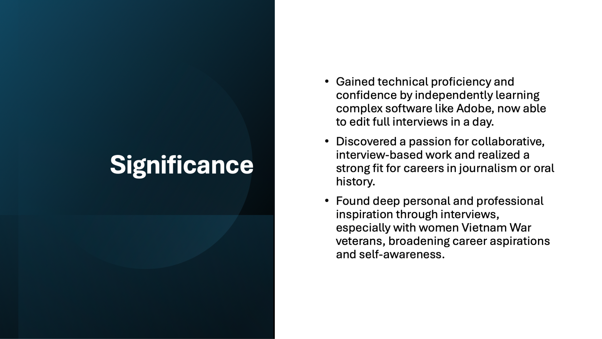
Slide 14
Veterans History Project Internship
-
Autumn Curnutt
-
Autumn Curnutt
Slide 15
OVERVIEW - PROCESS
UPLOADING TO ADOBE PREMIERE/AUDIO
EDITING VIDEO SEGMENTS TOGETHER
EDITING AUDIO (REDUCE BACKGROUND NOISE, REMOVE RANDOM SOUNDS)
EDITING VIDEO SEGMENTS TOGETHER
EDITING AUDIO (REDUCE BACKGROUND NOISE, REMOVE RANDOM SOUNDS)
UPLOADING TO YOUTUBE
INSERTING CAPTIONS
CREATING CLIPS AND SUMMARIES
INSERTING CAPTIONS
CREATING CLIPS AND SUMMARIES
UPLOADING TO VERBIT
EDITING TRANSCRIPT
CREATING TIMESTAMP AND GLOSSARY
EDITING TRANSCRIPT
CREATING TIMESTAMP AND GLOSSARY
Slide 16
MY TAKEAWAYS - CAMPUSEXP
DIGITAL FLUENCY
ADOBE PREMIERE/AUDIO
VERBIT
YOUTUBE
VERBIT
YOUTUBE
PROFESSIONALISM
“ETHICAL BEHAVIOR”
VERY INGRAINED INTO OUR WORK
CONSENT
VERY INGRAINED INTO OUR WORK
CONSENT
Slide 17
MY TAKEAWAYS - OVERALL
MEANINGFUL
“MEANINGFUL” IS THE BEST WAY TO DESCRIBE OUR WORK, BOTH VETERANS HISTORY PROJECT AND THE DESCENDANTS PROJECT
SITTING IN ON INTERVIEWS, SEEING CORRESPONDENCE/UPDATES, AND SPEAKING AT THE SYMPOSIUM, IT’S CLEAR EVERYONE IS APPRECIATIVE AND INVESTED
CONFIRMED MY INTEREST IN PURSUING A CAREER FOCUSED ON CIVIL AND HUMAN RIGHTS, ESPECIALLY ADVOCATING FOR MINORITY AND MARGINALIZED COMMUNITIES
VERY THANKFUL TO HAVE BEEN APART OF BOTH PROJECTS, VERY EYE OPENING TO HEAR OTHERS’ STORIES